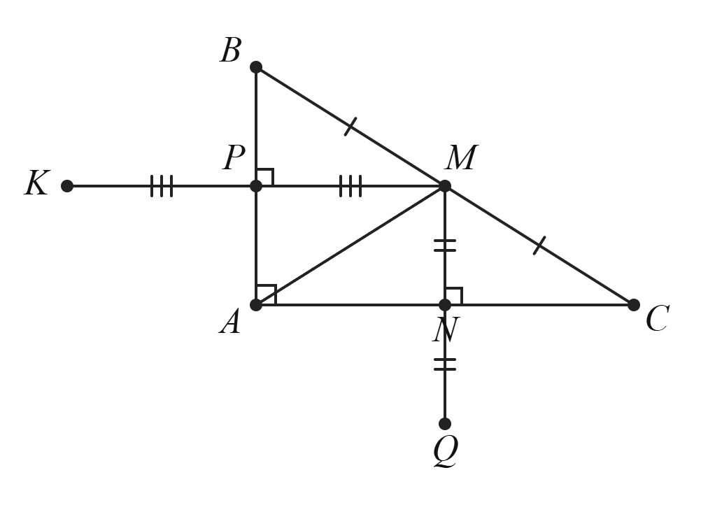
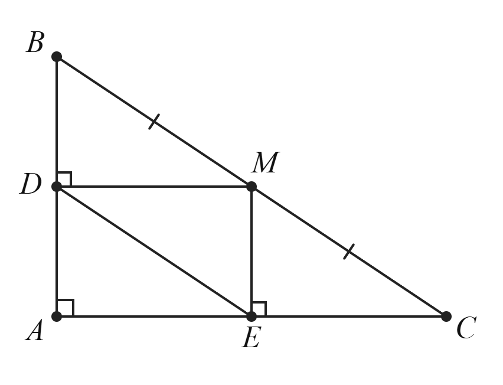
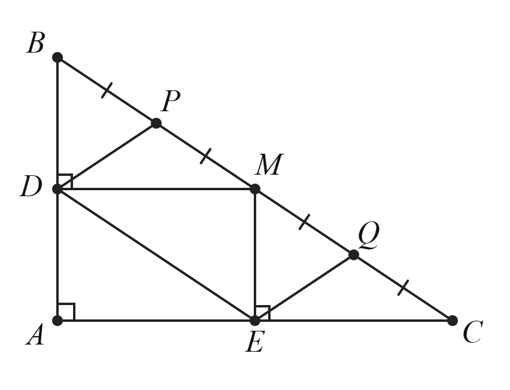
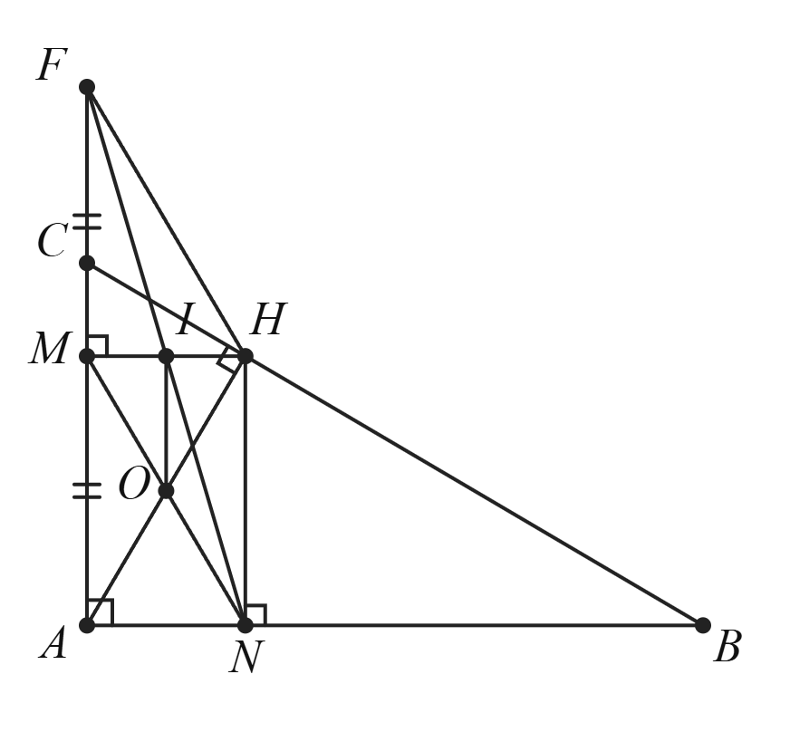
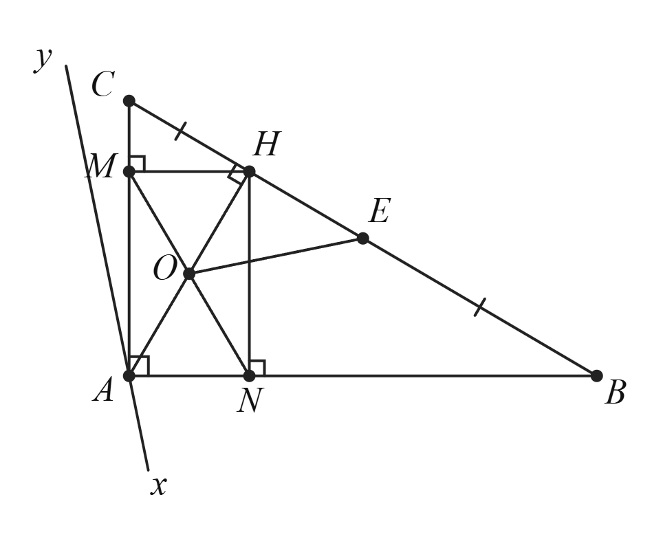

Luật: hình bài = chỉ giả thiết chung · hình ý = hình bài + điểm/đường ý đó dựng thêm (cộng dồn) · KHÔNG đánh dấu điều phải chứng minh · ý không dựng thêm ⇒ dùng lại hình ngay trên. Ký hiệu đoạn bằng nhau: tối đa 3 gạch, nhóm 4–6 dùng dấu x.
HLB00103 gốc HHC002401 · Đề khảo sát chất lượng giữa học kì 1 Toán 8 năm 2024-2025 — Phòng GD&ĐT huyện Xuân TrườngCho tam giác $ABC$ vuông tại $A$ có $AB<AC$ và đường trung tuyến $AM$. Từ $M$ kẻ $MN$ vuông góc với $AC$ tại $N$ và kẻ $MP$ vuông góc với $AB$ tại $P$.
a) Tứ giác $APMN$ là hình gì? Vì sao?
không dựng thêm ⇒ dùng hình HLB00103
b) Chứng minh: $NC=PM$.
không dựng thêm ⇒ dùng hình HLB00103
c) Trên tia đối của tia $NM$ lấy điểm $Q$ sao cho $N$ là trung điểm của $MQ$. Trên tia đối của tia $PM$ lấy điểm $K$ sao cho $P$ là trung điểm của $MK$. Chứng minh 3 điểm $Q$, $A$, $K$ thẳng hàng.

hình riêng của ý (HLY00265)
HLB00152 gốc HHC002574 · Đề kiểm tra giữa học kì 1 Toán 8 năm 2024-2025 — THCS Vạn Phúc, huyện Thanh Trì (Hà Nội)Cho tam giác $ABC$ vuông tại $A$. $M$ là trung điểm của $BC$. Gọi $D$ và $E$ lần lượt là hình chiếu của $M$ trên $AB$ và $AC$.
a) Tứ giác $ADME$ là hình gì? Vì sao?
không dựng thêm ⇒ dùng hình HLB00152
b) Chứng minh: $DE=\dfrac{1}{2}BC$.

hình riêng của ý (HLY00371)
c) Gọi $P$ là trung điểm của $BM$, $Q$ là trung điểm của $MC$. Chứng minh: $DP\parallel EQ$.

hình riêng của ý (HLY00372)
d) Tam giác $ABC$ vuông ban đầu cần thêm điều kiện gì để tứ giác $DPQE$ là hình chữ nhật?
không dựng thêm ⇒ dùng hình HLY00372
HLB00151 gốc HHC002564 · Đề kiểm tra giữa học kì 1 Toán 8 năm 2025-2026 — THCS Chu Văn An, phường Yên Sở (đề số 2 — đề chính thức)Cho $\triangle ABC$ vuông tại $A$ ($AB>AC$). Kẻ đường cao $AH$ của tam giác $ABC$ ($H \in BC$). Từ $H$ kẻ $HN$ vuông góc với $AB$ tại $N$, $HM$ vuông góc với $AC$ tại $M$, $MN$ cắt $AH$ tại $O$.
1) Tứ giác $ANHM$ là hình gì? Vì sao?
không dựng thêm ⇒ dùng hình HLB00151
2) Trên tia $AC$ lấy điểm $F$ sao cho $M$ là trung điểm của $AF$. Gọi $I$ là giao điểm của $HM$ và $FN$. Chứng minh rằng: $MN$ song song với $FH$ và tứ giác $AOIF$ là hình thang.

hình riêng của ý (HLY00368)
3) Gọi $E$ là trung điểm của $BC$. Qua $A$ vẽ đường thẳng $xy$ vuông góc với $OE$. Chứng minh rằng $xy$, $BC$, $NM$ đồng quy.

hình riêng của ý (HLY00369)